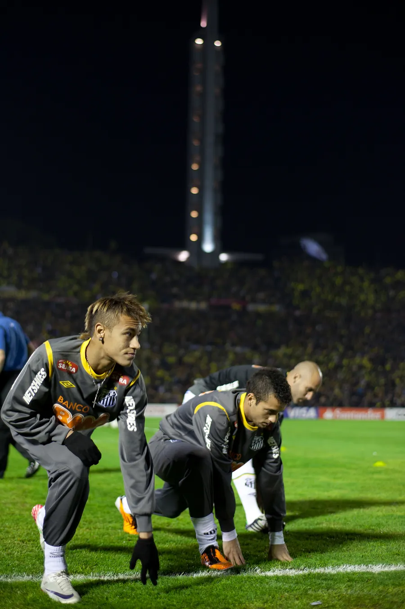

Capítulo 01 · 2009–2013
O menino da Vila.
Revelado na base do Santos, Neymar estreou no profissional em 7 de março de 2009, aos 17 anos, contra o Oeste. Em quatro temporadas, o moicano, os dribles e a ousadia viraram a cara de um time que voltou a encher a Vila e levou o clube de volta ao topo da América.
A torcida adotou o menino antes do resto do país. Com Paulo Henrique Ganso, ele formou a nova geração de "Meninos da Vila": em 2010 vieram o Campeonato Paulista e a Copa do Brasil.
2011 foi o ano em que o mundo olhou para Santos. Neymar abriu o placar na final contra o Peñarol, no Pacaembu, e o clube voltou a ganhar a Libertadores depois de 48 anos. Um mês depois, na Vila, marcou contra o Flamengo o gol que levaria o Prêmio Puskás da FIFA. Foi eleito o craque do Brasileirão e o Rei da América, em 2011 e 2012.
A saída. Com propostas do Barcelona e do Real Madrid na mesa, Neymar anunciou em 25 de maio de 2013 que iria para o Barcelona. No dia seguinte, em Brasília, chorou no hino da despedida: Santos 0 x 0 Flamengo, diante de mais de 63 mil pessoas.


- jogos
- 225
- gols
- 136
- assistências
- 63
- títulos
- 6
Todas as competições, de março de 2009 a maio de 2013. Jogos e gols segundo a Wikipédia em português e o Flashscore; as fontes variam entre 135 e 138 gols (o Lance registra 230 jogos e 138 gols). Assistências: Lance. Fontes: Lance · Olympics.com · Wikipédia.
- Copa Libertadores2011
- Copa do Brasil2010
- Campeonato Paulista2010 · 2011 · 2012
- Recopa Sul-Americana2012
Momentos que o projetaram
-
O tri da América
Santos 2 x 1 Peñarol, no Pacaembu. Neymar fez o primeiro gol da final, e o Santos ganhou a terceira Libertadores, a primeira desde a era Pelé.
Fonte: Wikipédia -
O gol do Puskás
Na Vila, numa noite de 5 a 4 para o Flamengo, ele tabelou, driblou a marcação em velocidade e tocou na saída do goleiro. Em janeiro de 2012, o lance ganhou o Prêmio Puskás da FIFA de gol mais bonito do ano.
Fonte: Puskas.com -
Frente a frente com o Barcelona
Final do Mundial de Clubes, em Yokohama: Barcelona 4 x 0. Neymar recebeu a Bola de Bronze do torneio e, um ano e meio depois, iria para o clube que o derrotou.
Fonte: Wikipedia (en) -
Craque do Brasileirão e Rei da América
Eleito o craque do Campeonato Brasileiro de 2011 e o melhor jogador da América no prêmio do jornal uruguaio El País, que voltou a vencer em 2012.
Fonte: Wikipédia -
A despedida
Santos 0 x 0 Flamengo, no Mané Garrincha. Um dia depois de anunciar a ida ao Barcelona, Neymar entrou em campo pela última vez com a camisa 11 e chorou durante o hino.
Fonte: CNN Brasil
.jpg){kind=link}


_-_vista_interna.jpg){kind=link}